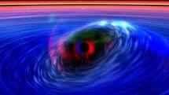
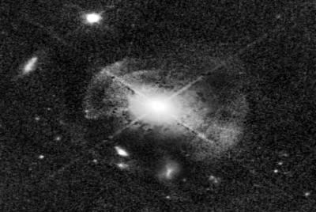
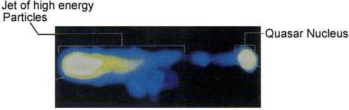
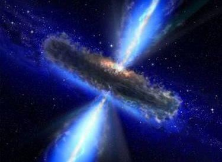
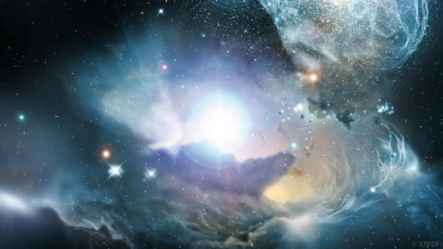
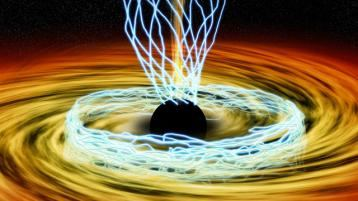

FIGURE 3.19: Black Hole

চিত্র 3_19 / Figure 3_19
চিত্র 3.19: ব্ল্যাক হোল
চিত্র 3_19 / Figure 3_19
―Quasars come in a variety of shapes and size, sometimes with a radio structure spreading across millions of light years, but all of them deriving their energy from some tiny central source, which may produce bursts of energy up to ten thousand times the energy of all the stars in our Milky Way galaxy put together. Einstein‘s most famous equation E = mc2 tells us how much energy could be obtained by converting all of a mass into energy and assuming that only a fraction of this mass-energy is being liberated in the quasars. We know that the total mass involved must be much more than a million times the mass of the Sun. Yet it is typically squeezed with in a volume of space no larger across than our solar system, the size of the largest stars. Such an object can only be a giant black hole. But black holes in theory, absorb radiation; they cannot shine as the brightest phenomena in the universe. But there is no paradox. It is not the quasar that shines; it is the matter around it.‖ – ―The Life and Death of Stars‖ by Geoffrey Bath in ―the Encyclopedia of Space Travel and Astronomy‖ edited by John Man
- কোয়াসারগুলি বিভিন্ন আকার এবং আকারে আসে, কখনও কখনও একটি রেডিও কাঠামোর সাথে লক্ষ লক্ষ আলোকবর্ষ জুড়ে ছড়িয়ে পড়ে, তবে তাদের সমস্ত কিছু ক্ষুদ্র কেন্দ্রীয় উত্স থেকে তাদের শক্তি আহরণ করে, যা আমাদের মিল্কিওয়ে গ্যালাক্সির সমস্ত নক্ষত্রের শক্তির দশ হাজার গুণ শক্তির বিস্ফোরণ ঘটাতে পারে৷ আইনস্টাইনের সবচেয়ে বিখ্যাত সমীকরণ E = mc2 আমাদের বলে যে সমস্ত ভরকে শক্তিতে রূপান্তরিত করে এবং এই ভর-শক্তির একটি ভগ্নাংশ কোয়াসারগুলিতে মুক্ত করা হচ্ছে বলে ধরে নিয়ে কত শক্তি পাওয়া যেতে পারে। আমরা জানি যে জড়িত মোট ভর অবশ্যই সূর্যের ভরের এক মিলিয়ন গুণের বেশি হতে হবে। তবুও এটি সাধারণত আমাদের সৌরজগতের চেয়ে বড় নয় এমন এক আয়তনের সাথে চেপে ধরা হয়, যা বৃহত্তম নক্ষত্রের আকার। এই ধরনের বস্তু শুধুমাত্র একটি বিশালাকার ব্ল্যাক হোল হতে পারে। কিন্তু তত্ত্বে কালো গর্ত, বিকিরণ শোষণ করে; তারা মহাবিশ্বের উজ্জ্বলতম ঘটনা হিসাবে চকমক করতে পারে না। কিন্তু কোনো প্যারাডক্স নেই। এটা চকমক যে কোয়াসার নয়; এটি তার চারপাশের বিষয়।'' - জন ম্যান দ্বারা সম্পাদিত 'দ্য এনসাইক্লোপিডিয়া অফ স্পেস ট্রাভেল অ্যান্ড অ্যাস্ট্রোনমি'-এ জিওফ্রে বাথের "দ্য লাইফ অ্যান্ড ডেথ অফ স্টারস"।
FIGURE 3.20: Quasar MC2 1635+119

চিত্র 3_20 / Figure 3_20
চিত্র 3.20: কোয়াসার MC2 1635+119
চিত্র 3_20 / Figure 3_20
―The whole picture hangs together in a thoroughly satisfactory way, given the reality of black holes and the efficiency with which gravity can turn a million or so solar mass into energy. Of course, the energies are like nothing we experience on the Earth. But why should they be? The universe is not only much bigger than we can really imagine, it is unimaginably more violent than anything conceived of only a few years ago‖. – ―The Life and Death of Stars‖ by Geoffrey Bath in ―the Encyclopedia of Space Travel and Astronomy‖ edited by John Man
- ব্ল্যাক হোলের বাস্তবতা এবং মাধ্যাকর্ষণ যে দক্ষতার সাথে এক মিলিয়ন বা তার বেশি সৌর ভরকে শক্তিতে পরিণত করতে পারে তার পরিপ্রেক্ষিতে পুরো ছবিটি সম্পূর্ণরূপে সন্তোষজনকভাবে একসাথে ঝুলে আছে। অবশ্যই, শক্তিগুলি আমরা পৃথিবীতে অনুভব করি না। কিন্তু কেন তারা হতে হবে? মহাবিশ্বটি কেবল যে আমরা কল্পনা করতে পারি তার চেয়ে অনেক বড় নয়, এটি কয়েক বছর আগে কল্পনা করা যে কোনও কিছুর চেয়েও অকল্পনীয়ভাবে বেশি হিংস্র”। - জন ম্যান দ্বারা সম্পাদিত 'দ্য এনসাইক্লোপিডিয়া অফ স্পেস ট্রাভেল অ্যান্ড অ্যাস্ট্রোনমি'-তে জিওফ্রে বাথের "দ্য লাইফ অ্যান্ড ডেথ অফ স্টারস"।
FIGURE 3.21: Quasar (3C273)

চিত্র 3_21 / Figure 3_21
চিত্র 3.21: কোয়াসার (3C273)
চিত্র 3_21 / Figure 3_21
A black hole surrounded by the swirling mass of material producing immense heat through friction is called a Quasar. The Quasars are the most violent objects in the universe. It is thought that every galaxy harbors a super- massive black hole in its central hub. The central hubs are associated with hot gas in violent motion and immense radiation. It is the ‗gulf of doom‘ where the stars fall, get destroyed, and produce devastating energy. 4. The Objects of Hell
ঘর্ষণ দ্বারা অপরিমেয় তাপ উৎপন্নকারী পদার্থের ঘূর্ণায়মান ভর দ্বারা বেষ্টিত একটি ব্ল্যাক হোলকে কোয়াসার বলে। কোয়াসার হল মহাবিশ্বের সবচেয়ে হিংস্র বস্তু। এটা মনে করা হয় যে প্রতিটি গ্যালাক্সি তার কেন্দ্রীয় কেন্দ্রে একটি সুপার-ম্যাসিভ ব্ল্যাক হোলকে আশ্রয় করে। কেন্দ্রীয় হাবগুলি হিংস্র গতি এবং অপরিমেয় বিকিরণে গরম গ্যাসের সাথে যুক্ত। এটি 'কয়ামতের উপসাগর' যেখানে তারা পড়ে, ধ্বংস হয় এবং ধ্বংসাত্মক শক্তি উৎপন্ন করে। 4. জাহান্নামের বস্তু
The following verses from the Quran prove the quasars and the galaxies as the objects of hell.
কোরানের নিচের আয়াতগুলো কোয়াসার এবং গ্যালাক্সিকে জাহান্নামের বস্তু হিসেবে প্রমাণ করে।
4a. Mother of the Sinner
4ক. পাপীর মা
―But he whose balance will be light, his mother will be endless hole. And what will explain to thee what this is? A fire blazing fiercely‖ [Al Quran 101: 8–11]
- কিন্তু যার ভারসাম্য হালকা হবে, তার মা হবে অন্তহীন গর্ত। এবং কি আপনাকে ব্যাখ্যা করবে এটা কি? একটি অগ্নি প্রচণ্ডভাবে জ্বলছে” [আল কুরআন 101: 8-11]
The endless hole (black hole) that is blazing with fierce fire should be a quasar. The fierce fire is produced by the hot gas swirling around the black hole in violent motion. It may also be the central super-massive black hole of a galaxy. The central super-massive black hole is like the mother of a galaxy. After the Final Judgment, a sinner will be posted permanently into a galaxy as a forgotten vicegerent of God. Then the central super-massive black hole will be like his mother as well.
যে অন্তহীন গর্ত (ব্ল্যাক হোল) প্রচণ্ড আগুনে জ্বলছে তা কোয়াসার হওয়া উচিত। হিংস্র গতিতে ব্ল্যাকহোলের চারপাশে ঘূর্ণায়মান গরম গ্যাসের কারণে প্রচণ্ড আগুন তৈরি হয়। এটি একটি গ্যালাক্সির কেন্দ্রীয় সুপার-ম্যাসিভ ব্ল্যাক হোলও হতে পারে। কেন্দ্রীয় সুপার-ম্যাসিভ ব্ল্যাক হোল একটি গ্যালাক্সির জননীর মতো। চূড়ান্ত বিচারের পরে, একজন পাপীকে ঈশ্বরের ভুলে যাওয়া ভাইসার্জেন্ট হিসাবে একটি গ্যালাক্সিতে স্থায়ীভাবে পোস্ট করা হবে। তাহলে কেন্দ্রীয় সুপার-ম্যাসিভ ব্ল্যাক হোলটিও তার মায়ের মতো হবে।
FIGURE 3.22: Quasar In this universe, only a black hole can be termed as the ―endless hole‖. It is a perfect place to arrest a jinni. A nearby planet can be an abode of a sinful human.

চিত্র 3_22 / Figure 3_22
চিত্র 3.22: কোয়াসার এই মহাবিশ্বে, শুধুমাত্র একটি ব্ল্যাক হোলকে "অন্তহীন গর্ত" বলা যেতে পারে। এটি একটি জিন্নি ধরার জন্য উপযুক্ত জায়গা। কাছাকাছি একটি গ্রহ পাপী মানুষের আবাস হতে পারে।
চিত্র 3_22 / Figure 3_22
FIGURE 3.23: Quasar

চিত্র 3_23 / Figure 3_23
চিত্র 3.23: কোয়াসার
চিত্র 3_23 / Figure 3_23
4b. No means to Turn Away
4 খ. দূরে সরে যাওয়ার উপায় নেই
A sinner will be put into an object close to a black hole so that he can feel the heat. The object will be so close to the black hole that the sinner will always be in tension that his object may fall into the intense gravitational spiral of the black hole, as it is indicated in the following verse:
একজন পাপীকে একটি ব্ল্যাকহোলের কাছে একটি বস্তুতে রাখা হবে যাতে সে তাপ অনুভব করতে পারে। বস্তুটি ব্ল্যাক হোলের এত কাছে থাকবে যে পাপী সর্বদা টেনশনে থাকবে যে তার বস্তুটি ব্ল্যাক হোলের তীব্র মহাকর্ষীয় সর্পিলে পড়ে যেতে পারে, যেমনটি নিম্নলিখিত আয়াতে নির্দেশ করা হয়েছে:
―One Day He will say, "Call on those whom you thought to be My partners", and they will call on them, but they will not listen to them. And We shall set a Crucible (Mawbiqan) between them, and the sinful shall see the fire and apprehend that they have to fall therein—no means will they find to turn away from there.‖ [Al Quran 18: 52-53]
একদিন তিনি বলবেন, যাদেরকে তোমরা আমার শরীক মনে করেছিলে তাদেরকে ডাক এবং তারা তাদের ডাকবে কিন্তু তারা তাদের কথা শুনবে না। এবং আমরা তাদের মধ্যে একটি ক্রুসিবল (মাউবিকান) স্থাপন করব এবং পাপীরা আগুন দেখতে পাবে এবং বুঝতে পারবে যে তাদের সেখানে পড়তে হবে - তারা সেখান থেকে ফিরে যাওয়ার কোন উপায় পাবে না।'' [আল কুরআন 18: 52-53]
The gravitational spiral leads an object into the Accretion Disk. The objects get smashed due to friction and produce devastating heat. A crucible is a container in which metals or other substances are melted, or subjected to very high temperatures. In above verse, the ―Accretion Disk‖ is called ―Crucible‖ (Mawbiqan).
মহাকর্ষীয় সর্পিল একটি বস্তুকে অ্যাক্রিশন ডিস্কে নিয়ে যায়। ঘর্ষণের কারণে বস্তুগুলি ভেঙে যায় এবং বিধ্বংসী তাপ উৎপন্ন করে। একটি ক্রুসিবল হল একটি পাত্র যেখানে ধাতু বা অন্যান্য পদার্থ গলে যায় বা খুব উচ্চ তাপমাত্রার শিকার হয়। উপরের আয়াতে, "অ্যাক্রিশন ডিস্ক" কে "ক্রুসিবল" (মাওবিকান) বলা হয়েছে।
FIGURE 3.24: Accretion Disc / a Crucible

চিত্র 3_24 / Figure 3_24
চিত্র 3.24: অ্যাক্রিশন ডিস্ক / একটি ক্রুসিবল
চিত্র 3_24 / Figure 3_24
In one galaxy, there will be one human, but there will be a good number of other creatures and anti-creatures. There will be dangerous animals, poisonous snakes, and insects. There will be the jinni who was invested by Iblis (Chief Satan) to misguide him. There will be idol-jinns that he used to worship. The jinns will not answer his call because they will be punished in a different dimension beyond the black hole. We cannot see a complete galaxy. We see objects of visible (baryonic) matter only. In a galaxy, there is dark matter, minimum five times more than the visible matter. The visible matter and the antimatter (antimatter is kind of dark matter) form two different dimensions of a galaxy. The same gravitational force binds the matter and the antimatter. So, a black hole can be viewed as a door connecting the dimensions. The jinns are created from anti-matter, so they live in the dimension of antimatter. Humans are created from visible matter; they live in the dimension of visible matter. If the jinns are called by a human, they are supposed to come out through the black hole, but they will not be able to come out easily, because of the Mawbiqan (Crucible / Accretion Disk). How a human can call an anti-creature (a jinni)? But, in above verses, Allah is asking the hell dweller to call the jinns. It means that a human has potential ability to call them, or he will have such ability after the resurrection. One day the hell dwellers will be able to use them as allies:
একটি গ্যালাক্সিতে, একজন মানুষ থাকবে, তবে অন্যান্য প্রাণী এবং বিরোধী প্রাণীর একটি ভাল সংখ্যা থাকবে। সেখানে বিপজ্জনক প্রাণী, বিষাক্ত সাপ এবং পোকামাকড় থাকবে। সেখানে এমন জিন থাকবে যাকে ইবলিস (প্রধান শয়তান) বিভ্রান্ত করার জন্য বিনিয়োগ করেছিল। সেখানে মূর্তি-জিন থাকবে যাদের সে পূজা করত। জ্বিনরা তার ডাকে সাড়া দেবে না কারণ তাদের ব্ল্যাক হোলের বাইরে ভিন্ন মাত্রায় শাস্তি দেওয়া হবে। আমরা একটি সম্পূর্ণ গ্যালাক্সি দেখতে পারি না। আমরা কেবল দৃশ্যমান (ব্যারিওনিক) পদার্থের বস্তু দেখি। একটি ছায়াপথে, অন্ধকার পদার্থ আছে, দৃশ্যমান পদার্থের চেয়ে ন্যূনতম পাঁচগুণ বেশি। দৃশ্যমান পদার্থ এবং প্রতিপদার্থ (অ্যান্টিম্যাটার এক ধরনের অন্ধকার পদার্থ) একটি ছায়াপথের দুটি ভিন্ন মাত্রা গঠন করে। একই মহাকর্ষ বল পদার্থ এবং প্রতিপদার্থকে আবদ্ধ করে। সুতরাং, একটি ব্ল্যাক হোলকে মাত্রাগুলিকে সংযোগকারী একটি দরজা হিসাবে দেখা যেতে পারে। জিনরা অ্যান্টি-ম্যাটার থেকে তৈরি, তাই তারা অ্যান্টিম্যাটারের মাত্রায় বাস করে। দৃশ্যমান বস্তু থেকে মানুষ সৃষ্টি হয়েছে; তারা দৃশ্যমান পদার্থের মাত্রায় বাস করে। জ্বীনদেরকে মানুষ ডাকলে ব্ল্যাক হোল দিয়ে বের হয়ে আসার কথা, কিন্তু মাওবিকান (ক্রুসিবল/অ্যাক্রিশন ডিস্ক) এর কারণে তারা সহজে বের হতে পারবে না। একজন মানুষ কিভাবে একটি জীব বিরোধীকে (জিনি) বলতে পারে? কিন্তু উপরের আয়াতে আল্লাহ জাহান্নামীকে জিন ডাকতে বলছেন। এর মানে হল যে একজন মানুষের তাদের ডাকার সম্ভাব্য ক্ষমতা আছে, অথবা পুনরুত্থানের পরে তার এমন ক্ষমতা থাকবে। একদিন নরকবাসী তাদের মিত্র হিসাবে ব্যবহার করতে সক্ষম হবে:
―…We made the satans (jinns) friends to those without faith.‖ [Al Quran 7:27]
"...আমি শয়তানদের (জিনদের) বন্ধু বানিয়েছিলাম যারা বিশ্বাসী নয়।" [আল কুরআন 7:27]
―…I will fill hell with jinns and men all together‖ [Al Quran 11:119]
"...আমি জ্বীন ও মানুষ সবাইকে একসাথে জাহান্নাম পূর্ণ করব" [আল কুরআন 11:119]
―…I will fill hell with jinns and men all together‖ [Al Quran 32:13]
"...আমি জ্বীন ও মানুষ সবাইকে একসাথে জাহান্নাম পূর্ণ করব" [আল কুরআন 32:13]
A human nafs (main soul) is a combination of unknown force fields (not yet discovered). Some of the force fields can interact with both matter and anti-matter, as gravitational force can interact with both matter and anti-matter. So, a human may obtain the soul aided vision (third-eye-vision) suitable to see the anti-creatures. The nafs of a human spreads throughout his body, and it has vital points called Latifa / Chakra. The vital point of the forehead will work as the third eye (human soul is deliberately discussed in Section-10 of Chapter-6). A person will be a vicegerent of God over a whole galaxy, but a jinni does not obey so easily. Main satan (Iblis), a jinni, denied to prostrate himself before Adam.
একটি মানব নফস (মূল আত্মা) হল অজানা বল ক্ষেত্রগুলির সংমিশ্রণ (এখনও আবিষ্কৃত হয়নি)। কিছু বল ক্ষেত্র পদার্থ এবং বিরোধী পদার্থ উভয়ের সাথেই যোগাযোগ করতে পারে, কারণ মহাকর্ষীয় বল পদার্থ এবং বিরোধী পদার্থ উভয়ের সাথেই যোগাযোগ করতে পারে। সুতরাং, একজন মানুষ বিরোধী প্রাণীদের দেখার জন্য উপযুক্ত আত্মার সাহায্যকারী দৃষ্টি (তৃতীয় চোখ-দৃষ্টি) পেতে পারে। একজন মানুষের নফস তার সারা শরীরে ছড়িয়ে পড়ে এবং এতে লতিফা/চক্র নামে গুরুত্বপূর্ণ পয়েন্ট রয়েছে। কপালের অত্যাবশ্যক বিন্দু তৃতীয় নয়ন হিসাবে কাজ করবে (মানুষের আত্মা ইচ্ছাকৃতভাবে অধ্যায়-6 এর ধারা-10 এ আলোচনা করা হয়েছে)। একজন ব্যক্তি গোটা গ্যালাক্সিতে ঈশ্বরের উপাস্য হবেন, কিন্তু একটি জিনি এত সহজে মেনে চলে না। প্রধান শয়তান (ইবলিস), একটি জিনি, আদমের সামনে নিজেকে সেজদা করতে অস্বীকার করেছিল।
4c. Mighty Adjuration
4 গ. পরাক্রমশালী অ্যাডজুরেশন
―But nay, I swear by the Houses of Stars (Mawaqin-Nujumi / Galaxies). And, indeed it surely a swear if you know great‖ [Al Quran 56: 75–76]
- কিন্তু না, আমি কসম করছি তারার ঘরের (মাওয়াকিন-নুজুমি/গ্যালাক্সি)। এবং, এটি অবশ্যই একটি শপথ যদি আপনি মহান জানেন” [আল কুরআন 56: 75-76]
The stars are not haphazardly scattered throughout the space; they are collected into houses called galaxies. So, ―Mawaqin-Nujumi‖ (Houses of Stars) means ―Galaxies‖. There are billions of galaxies in the universe. We live in the Milky Way galaxy. Then why, in above verse, Allah is trying to scare us by pointing out the galaxies? There could be no other reason but that many humans will be destined on the Day of Judgment to live in those galaxies forever. A sinner will be posted alone in a galaxy as a vicegerent of God. But, he will be a forgotten vicegerent. He will not get any divine help. He will be in pain due to the very nature of his abode. "Taste ye then - for ye forgot the Meeting of this Day of yours, and We too will forget you - taste ye the Penalty of Eternity for your deeds!" [Al Quran 32:14]
নক্ষত্রগুলো এলোমেলোভাবে মহাশূন্যে ছড়িয়ে ছিটিয়ে নেই; তারা গ্যালাক্সি নামক বাড়িতে সংগ্রহ করা হয়. সুতরাং, "মাওয়াকিন-নুজুমি" (নক্ষত্রের ঘর) মানে "গ্যালাক্সি"। মহাবিশ্বে কোটি কোটি গ্যালাক্সি রয়েছে। আমরা মিল্কিওয়ে গ্যালাক্সিতে বাস করি। তাহলে উপরের আয়াতে কেন আল্লাহ গ্যালাক্সিগুলো দেখিয়ে আমাদের ভয় দেখানোর চেষ্টা করছেন? এ ছাড়া আর কোনো কারণ থাকতে পারে না যে, কিয়ামতের দিন অনেক মানুষের ভাগ্যেই এই ছায়াপথে চিরকাল বসবাস করা হবে। একজন পাপীকে ঈশ্বরের ভাইসার্জেন্ট হিসেবে গ্যালাক্সিতে একাই পোস্ট করা হবে। কিন্তু, তিনি একজন বিস্মৃত ভাইসজারেন্ট হবেন। সে কোন ঐশ্বরিক সাহায্য পাবে না। তার আবাসের প্রকৃতির কারণে সে ব্যথা পাবে। "তাহলে আস্বাদন কর - কেননা তোমরা তোমাদের এই দিনের সাক্ষাতকে ভুলে গেছ, এবং আমরাও তোমাদের ভুলে যাব - তোমাদের কৃতকর্মের জন্য অনন্তকালের শাস্তির স্বাদ গ্রহণ কর!" [আল কুরআন 32:14]